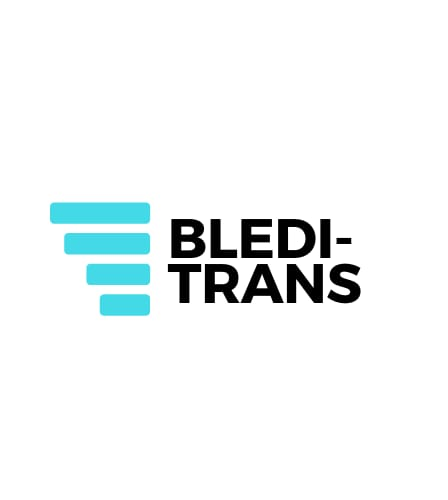

<mat-sidenav-container class="sidenav-container">
  <mat-sidenav #drawer class="sidenav" [ngClass]="{hidden: !(isHandset | async)!.matches}" fixedInViewport="false"
    [attr.role]="isHandset ? 'dialog' : 'navigation'" [mode]="(isHandset | async)!.matches ? 'over' : 'side'"
    [opened]="!(isHandset | async)!.matches">
    <mat-toolbar>
      <button type="button" aria-label="Toggle sidenav" mat-icon-button (click)="!drawer.toggle()"
        (click)="enableScroll()" *ngIf="(isHandset | async)!.matches"
        style="margin-left: 0; margin-right: 0; margin-bottom: 9px;">
        <mat-icon aria-label="Side nav toggle icon" style="margin-bottom: 1px;">menu
        </mat-icon>
      </button>
      Menu
    </mat-toolbar>
    <mat-nav-list>
      <a mat-list-item routerLink="/sherbimet" (click)="!drawer.toggle();" (click)="enableScroll()">{{ 'OurServices' | translate }}</a>
      <a mat-list-item routerLink="/kontakt" (click)="!drawer.toggle();" (click)="enableScroll()">{{ 'Contacts' | translate }}</a>
      <a mat-list-item routerLink="/rreth-nesh" (click)="!drawer.toggle();" (click)="enableScroll()">{{ 'About' | translate }}</a>
    </mat-nav-list>
  </mat-sidenav>
  <mat-sidenav-content style="overflow-y: hidden;">
    <mat-toolbar>
      <button type="button" aria-label="Toggle sidenav" mat-icon-button (click)="drawer.toggle()"
        *ngIf="(isHandset | async)!.matches" (click)="disableScroll()">
        <mat-icon aria-label="Side nav toggle icon">menu
        </mat-icon>
      </button>
      <button type="button" mat-button class="show">
        <a routerLink="/"><span>BLEDI-TRANS</span></a>
      </button>
      <span class="spacer"></span>
      <div >
        <mat-label>
          <i class="fa fa-globe">
            <mat-select>
              <mat-option (click)="onEnglishUse()">
                English
              </mat-option>
              <mat-option (click)="onAlbanianUse()">
                Shqip
              </mat-option>
            </mat-select>
          </i>
        </mat-label>
      </div>
      <div fxHide.xs fxHide.sm fxLayoutAlign="end center">
        <button mat-button class="show"><a routerLink="/sherbimet">{{ 'OurServices' | translate }}</a></button>
        <button mat-button class="show"><a routerLink="/kontakt">{{ 'Contacts' | translate }}</a></button>
        <button mat-button class="show"><a routerLink="/rreth-nesh">{{ 'About' | translate }}</a></button>
      </div>
    </mat-toolbar>
    <div class="image" fxLayout="column" fxLayoutALign="center center">
      
      <h2 fxLayout.lg="row" fxLayout.xs="column" fxLayoutAlign.xs="start center" fxLayoutAlign="center center">
        {{ 'MainHeader' | translate }}
      </h2>
    </div>
  </mat-sidenav-content>
</mat-sidenav-container>